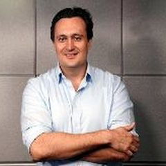
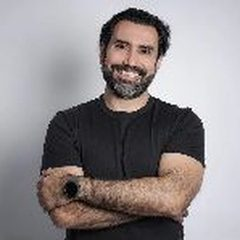
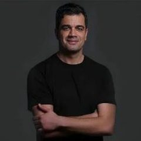
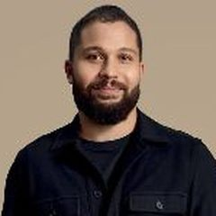
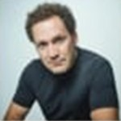
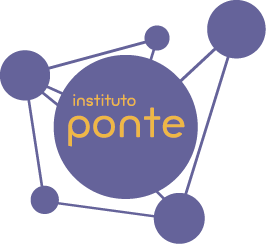

Marcela
Zaidem
Fundadora da CNP People Solutions
Uma ponte entre quem decide hoje e o que o futuro exige.
A imersão executiva do Instituto Ponte. Dois dias, quarenta vagas, uma sala pequena para conversas grandes. Conhecimento. Conexão. Impacto.
Fundadora da CNP People Solutions

ConfirmadoSócio da XP

ConfirmadoCEO do iFood

ConfirmadoCofundador da PicPay

ConfirmadoCEO e cofundador da Oficina

ConfirmadoMembro do Conselho da TOTVS
Fundador da Wine
Fundadora da Vinci Society
Presidente da Starbucks Brasil
Lista de âncoras em fechamento. Outros convites podem integrar a curadoria.
Garantir minha vagaDois dias para discutir o que está mudando e transformar reflexão em ação. A proposta combina conteúdo de referência, casos reais, acesso a lideranças, networking qualificado e um espaço estruturado para o participante trabalhar desafios do próprio negócio.
Especialistas e líderes que conectam pesquisa, visão de futuro e prática empresarial.
A discussão parte de problemas concretos e compartilhados, não somente de apresentações.
Networking entre pares, mentores e lideranças, com espaço para relações que continuam depois do evento.
Resultado esperado: sair da imersão com novas perspectivas, conexões estratégicas e plano de ação aplicável ao negócio.
Os eixos organizam a curadoria do BRIDGE e conectam transformação tecnológica, pessoas e mercado. A conexão entre os três é parte central da proposta: pessoas, tecnologia e mercado precisam evoluir de forma interdependente.
Novos comportamentos, novas competências, retenção de talentos, liderança e relação entre qualidade de vida, propósito e desempenho.
Inteligência artificial, transformação digital, produtividade, novos modelos de organização e vantagem competitiva.
Mudanças nos hábitos de consumo, novas gerações, longevidade, tendências e construção de marcas relevantes.
Curadoria e limite de vagas preservam a profundidade da experiência.
Empresários, sócios e C-levels de médias e grandes empresas, além de gestores em processos de sucessão familiar.
Público sênior e alinhado à proposta de troca, profundidade e aplicação prática. A inscrição é uma manifestação de interesse; a curadoria confirma cada vaga.

Por trás do BRIDGEO BRIDGE nasce de uma causa. Conheça a história, o programa e os alunos que essa imersão ajuda a apoiar.
São 40 vagas para dois dias de imersão. A inscrição é feita direto no checkout: concluído o pagamento, sua vaga está garantida.
Ficou com alguma dúvida? Fale com a equipe pelo WhatsApp ou escreva para bridge@institutoponte.org.br.
Você será direcionado ao checkout para concluir o pagamento.
O modelo do BRIDGE foi pensado para gerar receita própria e ampliar a sustentabilidade financeira do Instituto Ponte. A meta de resultado líquido equivale ao custo anual de 85 alunos.
12x R$ 2.500
por participante
R$ 1 mi
destinado ao Instituto Ponte
85 alunos
um ano de acompanhamento
.jpg)
Uma plataforma para empresas que querem estar próximas de liderança, transformação e impacto. Patrocínio, conteúdo, experiência, mídia, infraestrutura ou impacto social: o formato é desenhado com cada parceiro.